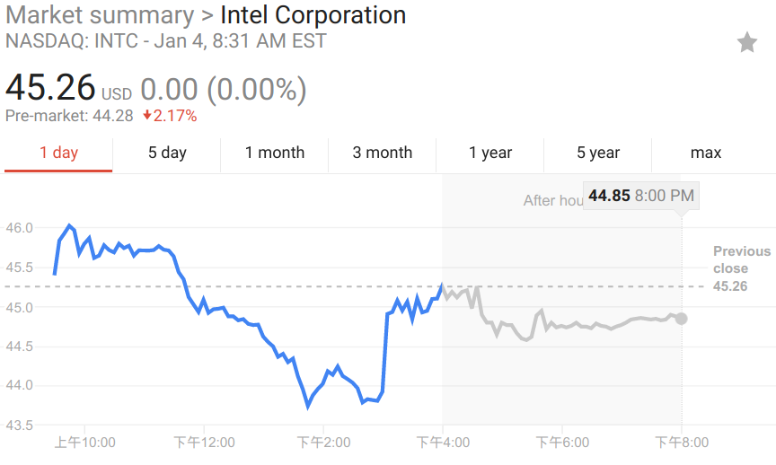

新年刚过，一个 Intel CPU 的漏洞消息如晴天霹雳，掀起了一波讨论浪潮。Intel 的股价也应声而且倒。

这个漏洞几乎影响了现在所有正在使用的 CPU 型号，囊括了包含Intel, AMD, ARM在内的所有主流 CPU 厂商。影响之大，前所未有。究竟这是怎么一个问题，又如何避免?
这个问题最早在2017年6月1日就已经被 Google Project Zero 团队报到了各大 CPU 厂商。
11月份左右自个操作系统厂商开始意识到这个问题，并开始了修补工作。
之所以今天才引起轰动，是因为 Project Zero 团队于1月3日把漏洞信息发布到了自己的博客上面 。
关于这个漏洞，有三个变种的问题，分别是
基于这三种变种问题，现在有两种已知的攻击方式
Meltdown 允许没有授权的进程访问系统级的内存数据。这个漏洞主影响 Intel 系统的 CPU, AMD 并不受影响。所有实现了out-of-order execution的Intel CPU 都可能受影响。这几乎包括了 1995 年后 Intel 生产的所有 CPU(除了 2013 年之前生产的 Intel Itanium and Intel Atom)。
这个问题，最大的影响是各大公有云厂商， 像 Google Cloud Platform, AWS, 阿里云等。
这个问题的发现者称，Xen(半虚拟化) 和 containers (docker, lxc, OpenVZ) 都受到影响。对于全虚拟化，当攻击客户机时，只能读取到客户机的内核内存，并不能读到宿主机的内核内存。
现在多数去平台都是使用的 KVM 全虚拟化，所以影响稍微小一些。但是也不容小觑。
修复情况： 各大系统实现了一套叫 Kernel page-table isolation(KPTI) 的技术，来避免这个漏洞。该漏洞已经包含在了 Linux kernel 4.15 中。也 backport 到了 linux kernel 4.14.11 中。 macOS 在 10.13.2 中也修复了这个问题。window 10 在1月3号也放出了相关补丁。
还有报告声称：KPTI 降低了 CPU 多达 30% 的性能。但是也有报告称：自从 Skylake 架构后，在 KPTI 下，性能损失比之前几代的要低的多。
KPTI 是大家吐槽最多的点之一，现在看来，性能影响并不是太大。
Spectre 允许其它用户进程访问另一用户进程的任何内存地址。根本原因是预测执行技术( speculative execution )的技术缺陷。报告的实验中破译数据的速度可达 503 KB/s，错误率低至万分之二。实验中已经可以读取 Firefox 56 的内存，并从中找到网页请求的头数据和浏览器储存的密码。
Meltdown 可以视为特别简单的一个 Spectre 特例情况。
几乎所有的电子系统都会受 Spectre 影响，包括台式电脑，笔记本和移动终端设备。而且 Spectre 影响 Intel, AMD 和 ARM 的处理器。
当前，Spectre 只影响到了用户级的进程。但是将来可能会有更加严重的影响。他不像 Meltdown, Spectre 要靠处理器架构上面的改变才可以消除。而且将来，Spectre 对云提供商的影响可能大过 Meltdown。Meltdown 只是允许未授权的应用去读取同台机器上的系统级内存里面的敏感数据。而 Spectre 能够诱骗虚拟化层向其运行的客户机传输数据。
一部分 Spectre 特例情况的修复工作在进行中。但是这个问题很难修复，会存在很长一段时间。
见于这个漏洞破坏很大，并且影响极其深远。我们应该立刻行动起来, 应对该问题。
对于各个战线(尤其是公有云)的运维同志，请及时升级自己的操作系统，打上相关的补丁。
对于大部分普通人来说，想避免这个问题，可以从以下几个方面做起。
Following is copied from ttx post
Where can I learn more ?
You can find lots of explanations over the Internet. To understand the basic flaw and the CPU technologies involved, I recommend reading Eben Upton's great post. If that's too deep or you need a good analogy to tell your less-technical friends, I find this one by Robert Merkel not too bad.
For technical details on the vulnerability themselves, Jann Horn's post on Google Project Zero blog should be first on your list. You can also read the Spectre and Meltdown papers.
For more information on the various mitigation techniques, I recommend starting with this article from Google's Security blog. For information about Linux kernel patches in particular, I recommend Greg Kroah-Hartman's post.
https://googleprojectzero.blogspot.com/2018/01/reading-privileged-memory-with-side.html
https://wiki.ubuntu.com/SecurityTeam/KnowledgeBase/SpectreAndMeltdown
https://en.wikipedia.org/wiki/Meltdown_(security_vulnerability)
https://en.wikipedia.org/wiki/Spectre_(security_vulnerability)
https://access.redhat.com/security/vulnerabilities/speculativeexecution
https://lists.centos.org/pipermail/centos-announce/2018-January/022696.html
https://lists.centos.org/pipermail/centos-announce/2018-January/thread.html
点击「阅读原文」，能看到更好的排版。